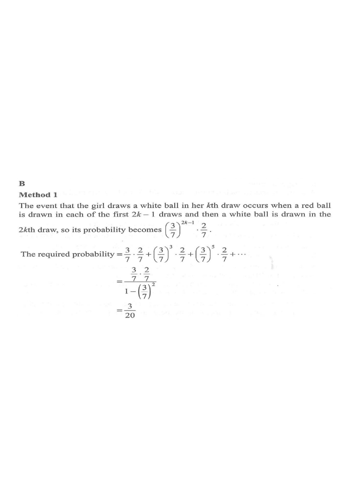

Scroll the solution → the diagram updates.
Topic 14 · Probability
A box contains 2 white balls, 2 yellow balls and 3 red balls. A boy and a girl take turns to draw one ball randomly from the box with replacement until one of them draws a white ball or a yellow ball. The boy draws a ball first. Find the probability that the girl draws a white ball.

Total balls $=2+2+3=7$. "White or yellow" = the game-ending colours, $2+2=4$ balls. So on any single draw: \[ P(\text{red})=\frac{3}{7},\qquad P(\text{white})=\frac{2}{7},\qquad P(\text{yellow})=\frac{2}{7}. \] The game ends exactly when a white or a yellow is drawn.
The girl draws on turns $2,4,6,\dots$ So she wins with a white ball on her $k$-th turn (the $2k$-th draw overall) precisely when: every one of the first $2k-1$ draws is red, and the $2k$-th draw is white.
Boy must not end the game, the girl's earlier turns must be red, then the girl draws white.
\[ \left(\frac{3}{7}\right)^{2k-1}\cdot\frac{2}{7} \] e.g. $k=1$: the sequence R W, probability $\dfrac{3}{7}\cdot\dfrac{2}{7}$.
\[ P=\frac{3}{7}\cdot\frac{2}{7}+\left(\frac{3}{7}\right)^{3}\cdot\frac{2}{7} +\left(\frac{3}{7}\right)^{5}\cdot\frac{2}{7}+\cdots =\frac{\frac{3}{7}\cdot\frac{2}{7}}{1-\left(\frac{3}{7}\right)^{2}} \] First term $a=\dfrac{3}{7}\cdot\dfrac{2}{7}=\dfrac{6}{49}$, common ratio $r=\left(\dfrac{3}{7}\right)^{2}=\dfrac{9}{49}$.
\[ P=\frac{\frac{6}{49}}{1-\frac{9}{49}}=\frac{\frac{6}{49}}{\frac{40}{49}}=\frac{6}{40}=\frac{3}{20}. \]